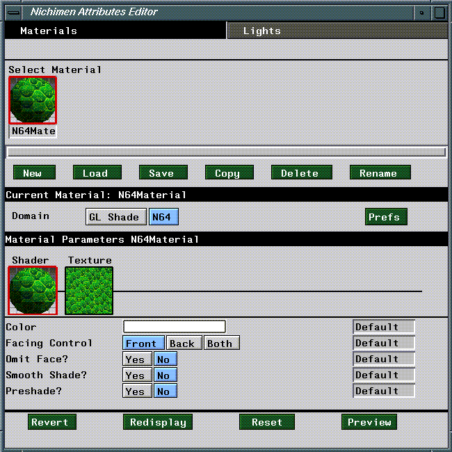
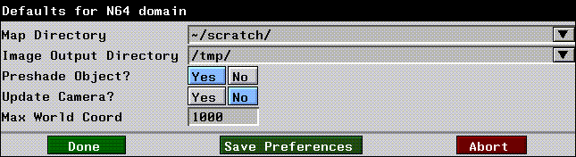

This chapter outlines briefly the parameters and attributes you'll use to define materials for the N64 render domain.
The N64 Domain Materials and Inheritance
Materials are groups of attributes which determine the appearance of an object in a rendered scene. In N·World, materials are separate data structures, which you must associate with objects using the Nichimen Browser. This system provides for enhanced flexibility, since you can define a single material and apply it to many objects. In object based systems, you must redefine object attributes for each object in a scene.
The Attributes Editor
You define materials using the Attributes Editor. To launch the Attributes Editor, (CLICK-L) on the Attributes button in the config bar.

N64 Domain Defaults
(Click-L) on the Prefs button to define a number of settings for the N64 domain.

Map Directory
The default directory from which maps are read.
Image Output Directory
At certain times, N64 Express will need to convert image files into a format suitable for inclusion in N64 data. This operation doesn't affect your original image files, but does result in a new file being written. Use the Image Output Directory preference to specify a location for N64 to use to write these files.
Preshade Object?
If set to Yes, the lights in the Default Light Group are used to preshade the object before it is sent to the Nintendo 64. See the Attributes Editor User's Guide for more information on setting up light groups.
Update Camera?
If set to Yes, the position of the camera on the Nintendo 64 is updated to follow the position of the camera in the N-Geometry window.
Max World Coords
Scaling factor used when converting the floating point coordinate values (used to represent objects in N-World) to a fixed point coordinate value on the Nintendo 64. A higher value means your objects will appear smaller on the Nintendo 64, while a lower value means your objects will appear larger.
The LISP formula used to convert the floating point value to a fixed point value is as follows:
(round (* 32768 (/ number *max-coord-value*)))
(round (* 32768 (/ 1.0 1000)))
32
Save Preferences/Done
(CLICK-L) on Done to update defaults with any changes you have made. If you want to make your changes to the N64 domain defaults permanent, (Click-L) on the Save Preferences button at the bottom of the window.
N64 Attributes are divided into two sections:, Shader and Texture. Shader parameters control how the shader renders the scene, while Texture parameters control how texture maps are applied to objects in a scene.
N64 Attributes
Shader Attributes
Color
Default: White
The color attribute is used for two purposes in the N64 render domain:
The smooth shade parameter selects either "color by vertex" or "color by face." (Figure 2.3)
Figure 2.3 Color by vertex vs. color by face
Texture Parameters
Texture Map
Default: None
Reset
(CLICK-L) on Reset to reset the attached Nintendo 64.
Preview
(CLICK-L) on Preview to send all the objects in the current scene to the Nintendo 64.
Faces Larger than 4K
If your object contains faces that use more than 4K of texture map memory, an error message appears, telling you that such faces exist on your object. The object is not sent over, and the faces are collected in N-Geometry for you.
Copyright © 1996, Nichimen Graphics Corporation. All rights reserved.